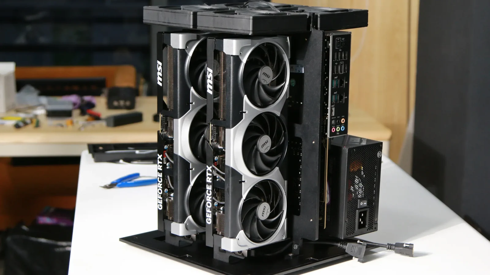

2× NVIDIA GeForce RTX 5090
Personal conceptDesk-sized local inference for quantized open models, private development, and sustained personal-agent workflows.
- Installed GPU memory
- 64 GB GDDR7
- Nominal aggregate bandwidth
- 3,584 GB/s
- Draft host
- Intel Xeon W5 · ASUS W790 ACE
- System memory / storage
- 96 GB RAM · 1 TB NVMe
- Draft networking
- 10 GbE + 2.5 GbE
- Concept envelope
- 1,550 W · 12.5 × 12.5 × 16 in · 33 lb
Each RTX 5090 is specified by NVIDIA with 32 GB GDDR7 and 1,792 GB/s bandwidth. Multi-GPU model support, memory sharding, power, and thermal behavior depend on the software and final engineering.